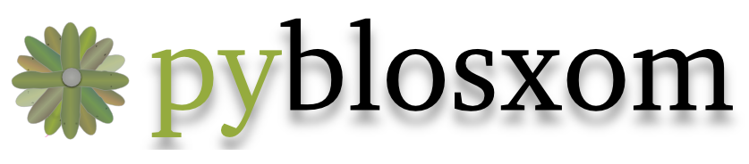

What is Pyblosxom
Pyblosxom is a lightweight blog system. It was originally a Python
clone of Blosxom but has since evolved into a blog system of its
own reminiscent of Blosxom.
Pyblosxom focuses on three things:
Simplicity
Pyblosxom stores all data on the file system in plain text files.
This allows you to use any text editor to create, update and
manipulate entries. You can also use existing text-manipulation
tools, version control, scripts, grep, ... for managing your blog.
Pyblosxom can run as a CGI script, WSGI component or you can use it
to statically compile your website into HTML/XML files.
Your workflow is your workflow.
Extensibility
Pyblosxom has a plugin framework enabling you to augment and enhance
Pyblosxom’s default behavior. Plugins are written in Python. We
maintain a list of plugins in the plugin registry on the website.
Plugins aren’t hard to write. We’re happy to help you write
plugins.
Community
There are several hundred Pyblosxom users out there all of whom have
different needs. Pyblosxom is used on a variety of operating
systems in a variety of environments. We have the standard open
source project fare: mailing lists, IRC channel, wiki, ...
Pyblosxom is built to let you use existing text-manipulation tools
without having to build the whole ecology from scratch.
Pyblosxom can be run as:
- a “static renderer” and compile your blog
- a CGI script
- a WSGI application
Overview of Pyblosxom
Entries, categories, storage:
- Pyblosxom stores everything as files on the file system—there is
no database.
- Each blog entry is a file.
- Blog entry files are stored in a directory hierarchy in your datadir.
- Each subdirectory in your datadir corresponds to a category of
your blog.
Themes:
- Themes in Pyblosxom are called flavours.
- A flavour consists of a set of templates.
- Flavours are stored in a directory called the flavourdir.
- Pyblosxom comes with several flavours: html, rss20, and atom.
- The website maintains a flavour
registry for flavours contributed by people like you.
- There’s more information on flavours and templates in
the Flavours and Templates chapter of the manual
(docs/flavours_and_templates.rst if you’re looking at the source).
Plugins:
- Pyblosxom has a plugin system.
- Plugins are written in Python.
- Plugins are loaded using the plugin_dirs and load_plugins
configuration variables.
- The website maintains a plugin
registry for plugins submitted by people like you.
- For more information on using plugins, see Plugins in the manual
(docs/plugins.rst if you’re looking at the source).
- For more information on writing plugins see Writing Plugins
(docs/dev_writing_plugins.rst if you’re looking at the source).